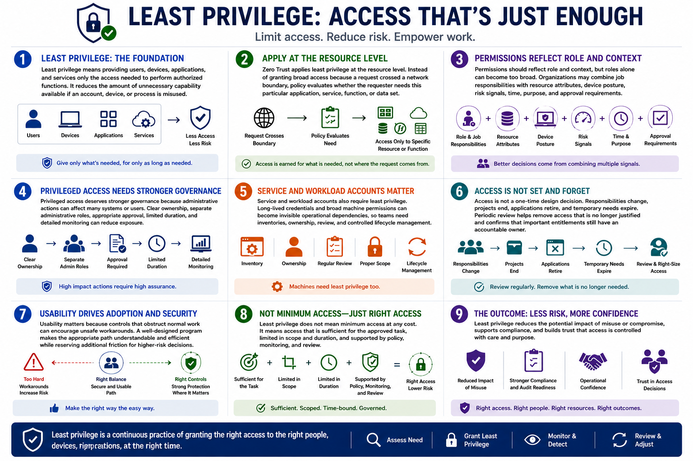

What Is Zero Trust?
Least Privilege and Access Control
Connecting to LMS... Progress: in progress
Version 1.0 | Date: 2026-06-16 | Educational overview of Zero Trust concepts.

Narration
Least privilege means providing users, devices, applications, and services only the access needed to perform authorized functions. It reduces the amount of unnecessary capability available if an account, device, or process is misused.
Zero Trust applies least privilege at the resource level. Instead of granting broad access because a request crossed a network boundary, policy evaluates whether the requester needs this particular application, service, function, or data set.
Permissions should reflect role and context, but roles alone can become too broad. Organizations may combine job responsibilities with resource attributes, device posture, risk signals, time, purpose, and approval requirements.
Privileged access deserves stronger governance because administrative actions can affect many systems or users. Clear ownership, separate administrative roles, appropriate approval, limited duration, and detailed monitoring can reduce exposure.
Service and workload accounts also require least privilege. Long-lived credentials and broad machine permissions can become invisible operational dependencies, so teams need inventories, ownership, review, and controlled lifecycle management.
Access is not a one-time design decision. Responsibilities change, projects end, applications retire, and temporary needs expire. Periodic review helps remove access that is no longer justified and confirms that important entitlements still have an accountable owner.
Usability matters because controls that obstruct normal work can encourage unsafe workarounds. A well-designed program makes the appropriate path understandable and efficient while reserving additional friction for higher-risk decisions.
Least privilege does not mean minimum access at any cost. It means access that is sufficient for the approved task, limited in scope and duration, and supported by policy, monitoring, and review.